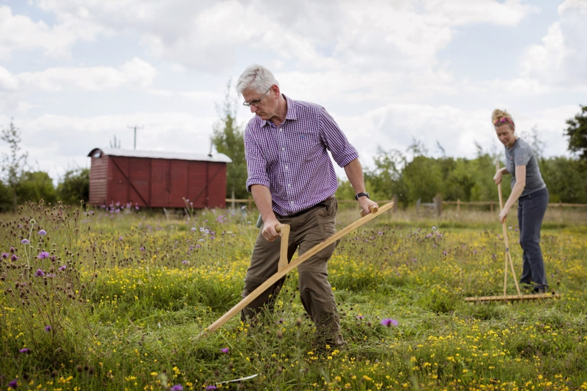
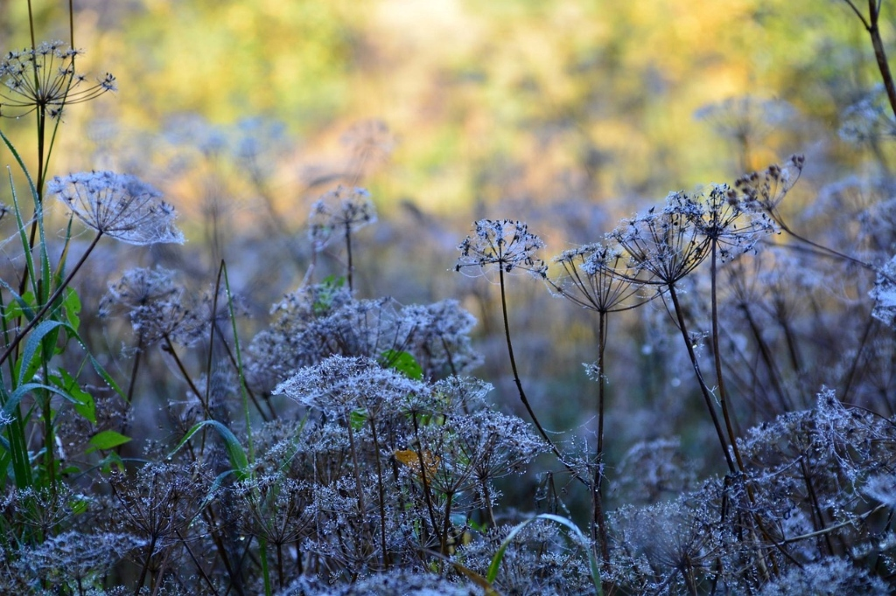

Our Story & Ecological Mission
Founded on the conviction that healthy human landscapes must coexist with indigenous biological systems, genetic provenance, and chemical-free nursery culture.

Re-wilding One Provenance at a Time
At Sylvan & Soil, our mission is to reverse biodiversity loss by supplying pure, wild-type regional native plants and delivering turn-key restoration contracting to landowners, municipal park districts, and conservation land trusts.
We reject the industrial nursery standard of propagating clone cultivars bred solely for uniform aesthetics. Every seed we collect and germinate carries the broad genetic diversity required to adapt to climate shifts, drought stress, and regional insect evolution.
Why Regional Native Species Matter
The foundational science behind our conservation nursery philosophy.
Insect Specialist Relationships
Over 90% of phytophagous native insects can only feed on the plant lineages with which they co-evolved. Exotic ornamentals act as food deserts for birds that rely on caterpillars to feed their broods.
Aquifer Recharge & Soil Carbon
Native grasses like Big Bluestem drive roots 10 to 15 feet into the subsoil, creating porous conduits for stormwater absorption and storing atmospheric carbon deep below the plow layer.
Chemical Independence
Because native plants possess natural immunities to regional fungal and insect pressure, established plantings thrive indefinitely with zero chemical fungicides, pesticides, or petroleum-based fertilizers.

Our Conservation-Minded Standards
We hold our propagation methods to strict ethical standards. All foundation stock is collected under permit across wild remnant populations, taking never more than 10% of seed from any single wild stand.